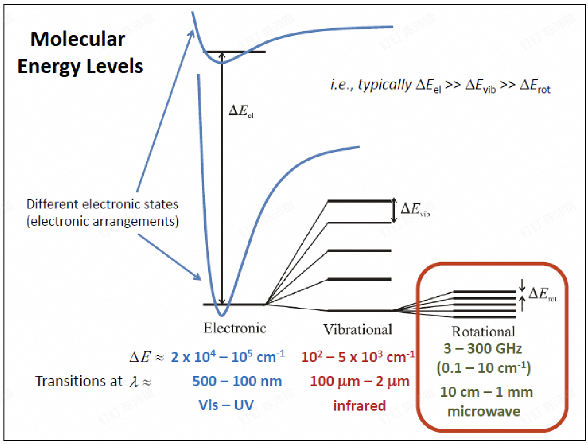
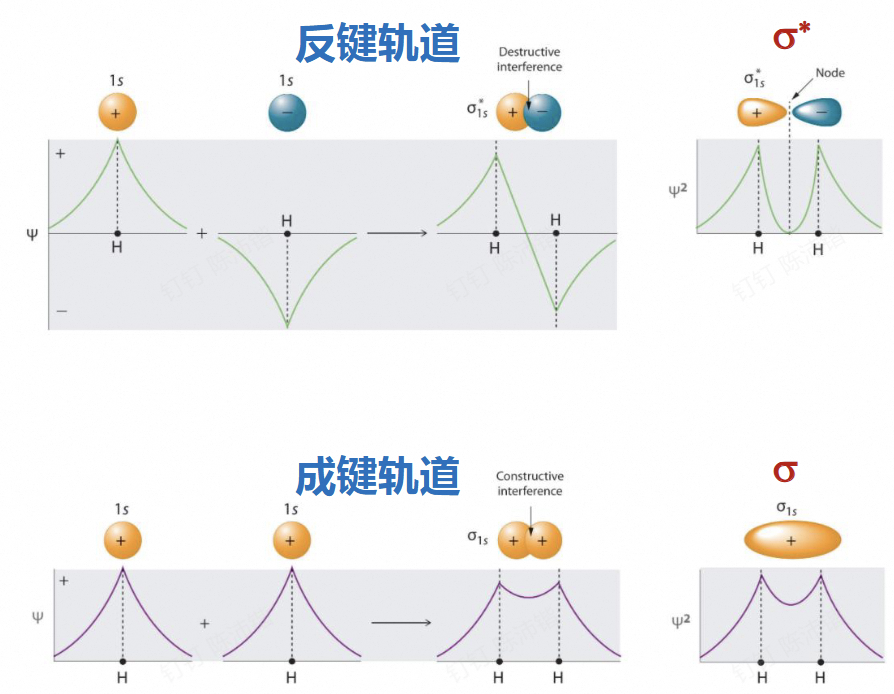
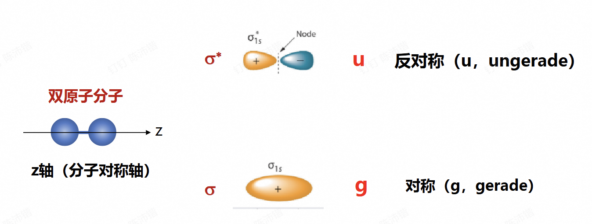
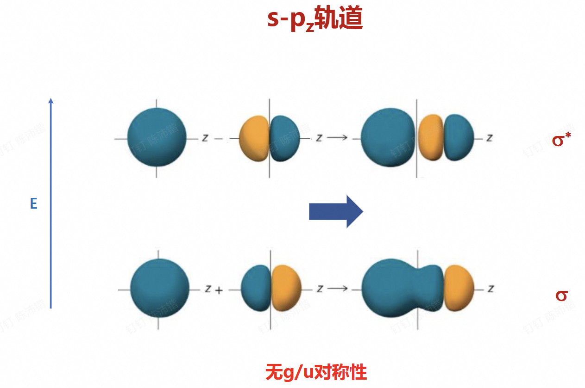

Chapter 6: 分子电子光谱¶

| 能级类型 | 能量差 (\(\Delta E\)) 数量级 / \(\text{cm}^{-1}\) | 对应光谱区 | 典型波长范围 | 结构嵌套关系 |
|---|---|---|---|---|
| 电子能级 | \(2 \times 10^4 \sim 10^5\) | 紫外 - 可见光 (UV - Vis) | \(100 \sim 500 \text{ nm}\) | 能量跨度最大，势能井内包含多个振动能级。 |
| 振动能级 | \(10^2 \sim 5 \times 10^3\) | 红外光 (Infrared) | \(2 \sim 100 \, \mu\text{m}\) | 嵌套于特定的电子态内，其内部包含多个转动能级。 |
| 转动能级 | \(0.1 \sim 10\) (或 \(3 \sim 300 \text{ GHz}\)) | 微波 (Microwave) | \(1 \text{ mm} \sim 10 \text{ cm}\) | 能量跨度最小，嵌套于特定的振动能级内，最为精细。 |
6.1 双原子分子轨道¶
在玻恩奥本海默近似下，只有一个分子的薛定谔方程可以精确求解 \(\rightarrow \text{H}_2^+\)
其他的，分子轨道 \(\leftarrow\) 原子轨道的线性组合
linear combination of atomic orbitals (LCAO)
6.1.1 分子轨道¶
两项的LCAO
代入薛定谔方程
乘以 \(\psi_1^*\)
同样，乘以 \(\psi_2^*\)
求解久期方程
积分项定义：
-
库仑积分 \(H_{ii} = \int \psi_i H \psi_i d\tau\)：初始原子轨道中一个电子的能量
-
转移积分 \(H_{ij} = \int \psi_i H \psi_j d\tau\)：处于两个原子轨道重叠中的电子能量为负值
-
重叠积分 \(S_{ij} = \int \psi_i \psi_j d\tau\)：不同原子轨道在空间重叠程度，小于1
分子轨道：原子轨道线性组合
-
低能级（成键轨道） $\(E_+ = \frac{H_{11} + H_{12}}{1 + S_{12}}\)$
\[\psi_+ = \frac{\psi_1 + \psi_2}{\sqrt{2(1+S)}}\] -
高能级（反键轨道） $\(E_- = \frac{H_{11} - H_{12}}{1 - S_{12}}\)$
\[\psi_- = \frac{\psi_1 - \psi_2}{\sqrt{2(1-S)}}\] -
近似 \(S_{12} \approx 0\)： $\(E_{\pm} = H_{11} \pm H_{12}\)$
\[\psi_{\pm} = \frac{\psi_1 \pm \psi_2}{\sqrt{2}}\]
LCAO-MO原则：
- 原子间距离足够小
- 能量足够接近价层轨道
- 轨道延主轴对称性一致
- 分子轨道和原子数目相等

6.1.2 中心对称性¶

同核双原子有\(g/u\)对称性，异核双原子无\(g/u\)对称性

6.1.3 电子组态¶
举例：
\(\text{O}_2\): \((\sigma_g1s)^2(\sigma_u^*1s)^2(\sigma_g2s)^2(\sigma_u^*2s)^2(\sigma_g2p)^2(\pi_u2p)^4(\pi_g^*2p)^2\)
-
能量最低原理
-
洪特规则（见后）
-
泡利原理：全同费米子体系总波函数的反对称性。如果体系中两个电子处于完全相同的量子态（即四个量子数完全相同，意味着它们的空间和自旋坐标完全重合 \(x_i = x_j\)），那么交换这两个电子，波函数本身不应发生改变。为了同时满足波函数不变和改变符号的要求，必须有：
6.2 双原子分子光谱项¶
分子都是多电子体系，考虑所有电子组成的总分子轨道性质
-
\(\Lambda\): 总轨道角动量量子数（z轴）
-
\(S\): 总自旋量子数
-
g/u: 中心对称性（仅同核双原子分子）
-
+,-: 延分子轴镜面对称性
6.2.1 角量子数¶
-
MO总轨道角量子数（只考虑分子轴分量）
\[\Lambda = \left| \sum_i \lambda_i \right|\]\(\lambda_i\) 为电子 \(i\) 对应分子轨道角动量在 z轴（分子对称轴） 方向的投影，正负号为沿轴方向
\(\sigma\)键：\(\lambda = 0\) \(\pi\)键：\(\lambda = \pm 1\) \(\delta\)键：\(\lambda = \pm 2\)
\(\Lambda =\) 0 1 2 3 符号 \(\Sigma\) \(\Pi\) \(\Delta\) \(\Phi\) -
总自旋量子数 \(S = \left| \sum_i s_i \right|\)
\(\text{H}_2^+\): \(S=1/2\) \(\text{H}_2\): \(S=0\)
-
总自旋角动量 \(\vec{S}\) 在z轴投影 \(\Sigma = S, S - 1, \dots, -S + 1, -S\)
-
若考虑旋轨耦合，MO总角量子数 \(\Omega = \Lambda + \Sigma\)
6.2.2 中心对称性¶
g/u 对称性：总轨道波函数中心对称 (g, gerade) 或反对称 (u, ungerade)
各分子轨道（MO）的奇偶对称性如下：
-
\(\sigma\) 轨道：g
-
\(\sigma^*\) 轨道：u
-
\(\pi\) 轨道：u
-
\(\pi^*\) 轨道：g
应用规则
-
只考虑同核双原子分子
-
多电子规则：所有电子MO g/u 的乘积
乘积规则： * \(g \times g = g\)
-
\(u \times u = g\)
-
\(u \times g = u\)
6.2.3 镜面对称性¶
+, - 对称性：总轨道波函数延分子轴镜面对称（+）或者反对称（-）
-
总波函数等于所有电子+-乘积，只需要考虑未填满电子
-
所有 \(\sigma\) 轨道，+对称（未填满电子都在 \(\sigma\) 轨道上 \(\rightarrow \Sigma^+\)）；\(\pi\) 和 \(\delta\)，无确定对称性
-
只需要标记 \(\Sigma\)光谱项：轨道角动量为0，波函数的对称性主要由电子分布的空间对称性决定
-
未成对电子在 \(\pi\) 轨道上，同一分子轨道内\(\Sigma\)可结合Pauli原理确定，不同轨道\(\Sigma\) +-均可
-
两个等价 \(\pi\) 电子的三重态：\(\Sigma^-\)
-
两个等价 \(\pi\) 电子的单重态：\(\Sigma^+\)
-
不同 \(\pi\) 轨道的电子：\(\pm\) 均可
-